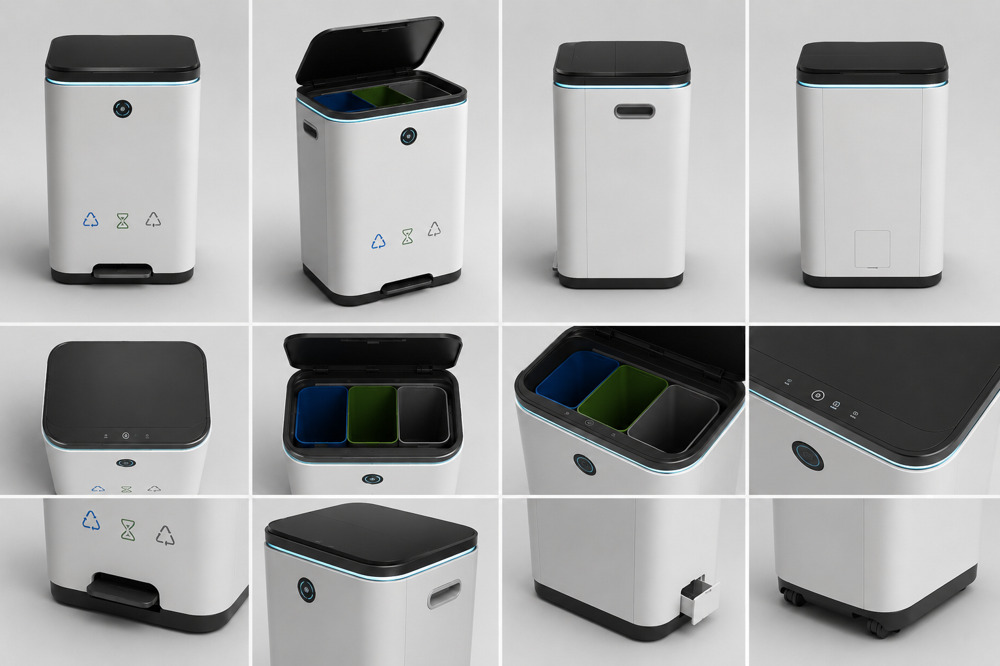
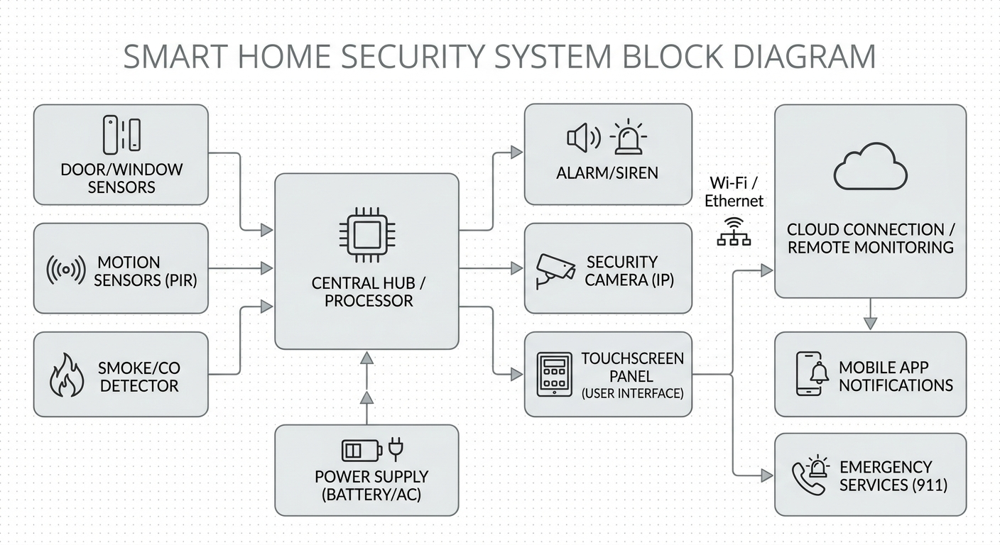

系统技术白皮书

总体架构设计
系统采用异构计算架构：上层以 STM32F4 作为中央调度核心，运行 FreeRTOS 实时操作系统，统管人机交互、电机伺服与网络通信；底层 FPGA 作为视觉协处理单元，承担图像卷积、边缘提取等计算密集型任务。两者间通过高速 SPI 总线与 UART 双通道实现全双工数据流，兼顾吞吐量与实时性。

运行流程
- 1. 超声波及红外双模传感器持续扫描投放口区域，一旦捕获人体信号，MCU 立即驱动舵机翻盖。
- 2. 物品投入后，OV7670 图像模组采集多帧画面，经由 FPGA 内置流水线完成灰度化、二值化及轮廓提取。
- 3. 提取到的特征向量回传 MCU，经分类决策算法匹配后，控制步进电机偏转导流板，将废弃物导入对应收集仓。
- 4. 称重传感器与温湿度探头周期性采样，一旦触发满载阈值，蜂鸣器与 LED 矩阵同步告警，并通过 Wi-Fi 模块推送工单至管理端。
核心硬件参数
器件选型以低功耗、高可靠为首要准则，兼顾 BOM 成本可控：
- 主控单元： STM32F411CEU6（ARM Cortex-M4 @ 100MHz），搭载优化版 FreeRTOS，中断响应延迟 < 5μs。
- 视觉加速器： Intel MAX10 系列 FPGA，内嵌 12 路并行 MAC 单元，单帧处理时间 ≤ 8ms。
- 传感与执行组件： HC-SR04 超声测距模组、SG90 金属齿轮舵机、OV7670 CMOS 图像传感器、HX711 24位 ADC 称重前端。